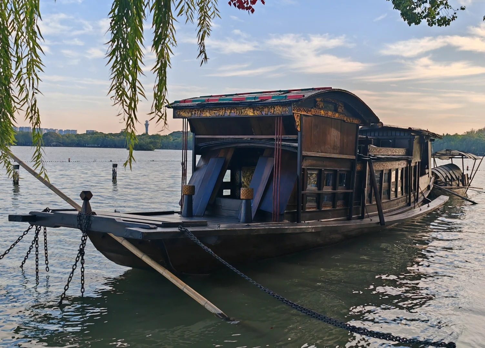
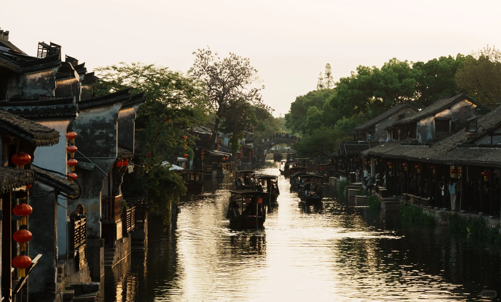
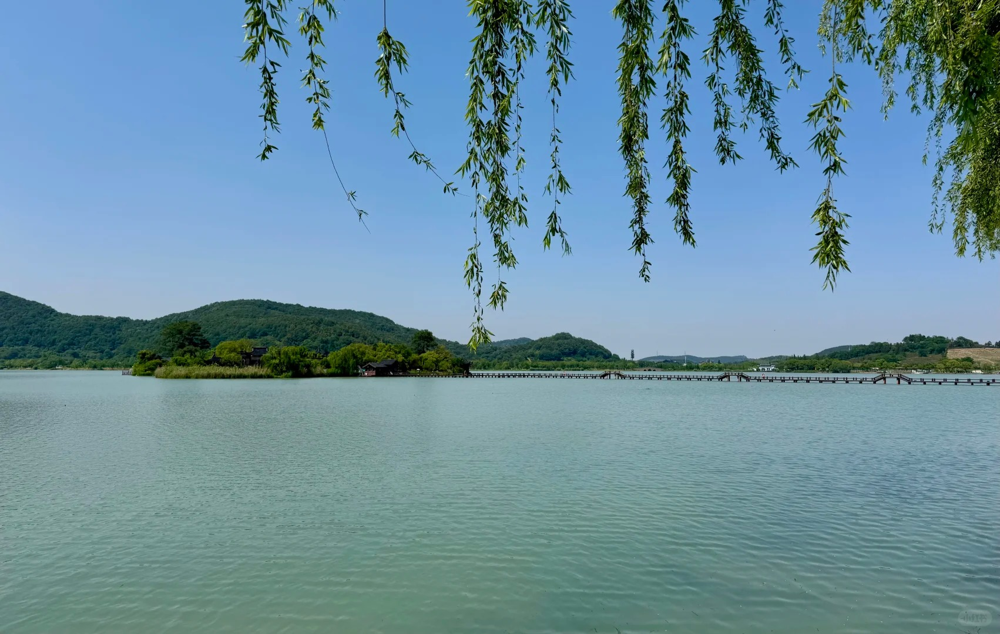
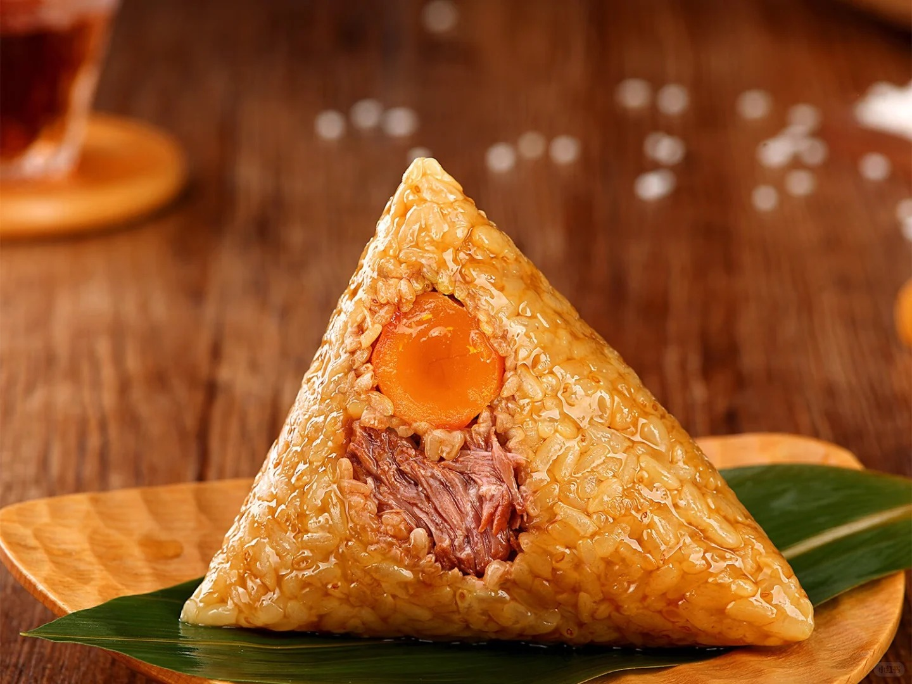
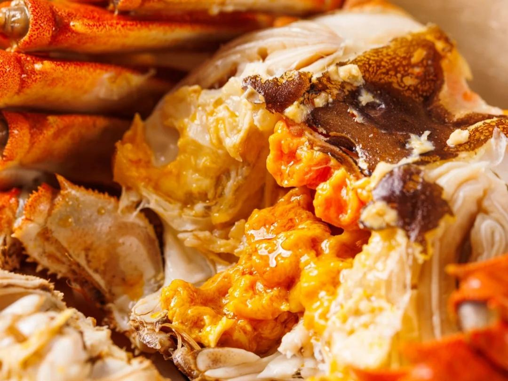
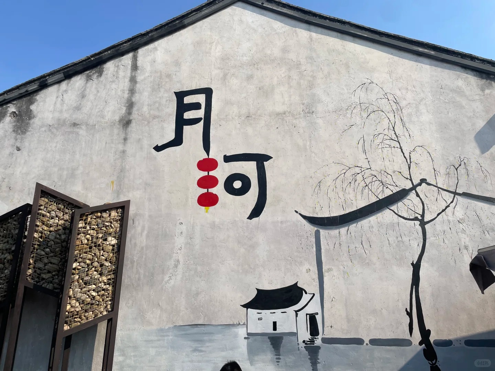
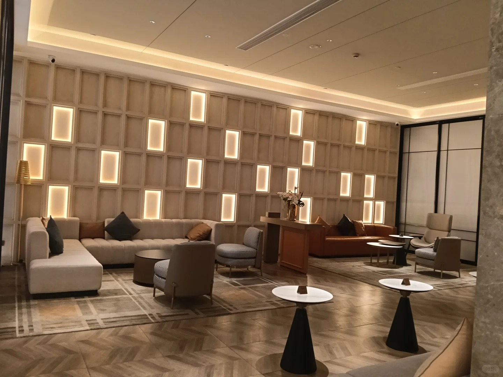
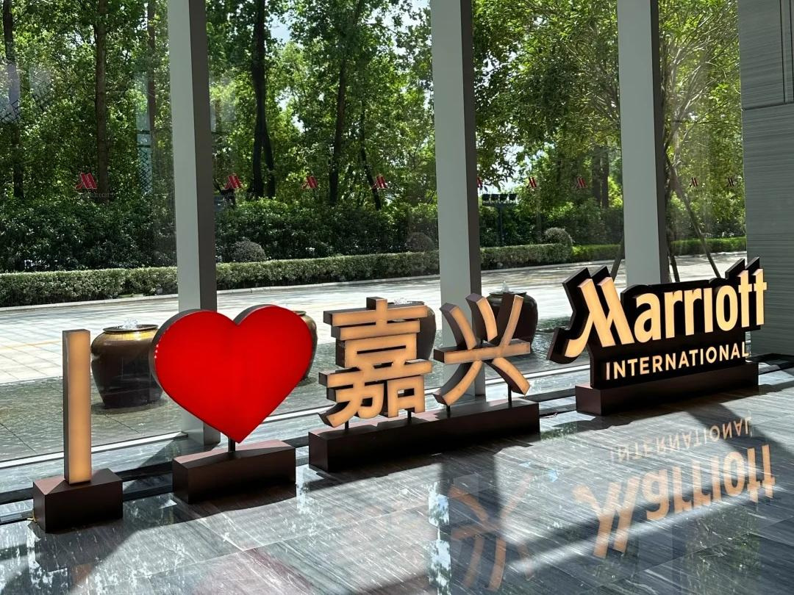

江南六大古镇之一，保存完好的明清建筑群与水乡石桥交相辉映，展现典雅的吴越文化底蕴。

嘉兴城市核心湖泊，湖光秀丽，沿岸绿地与人文景观相融，是体验江南水乡风情的好去处。
滨海山地度假区，山海相依风光开阔，兼具自然观景与休闲游乐，是嘉兴小众滨海游玩目的地。

千年水乡古镇，河道纵横、古桥错落，保留着浓郁的江南生活气息，适合慢游拍照。

国内罕见山、海、湖共生景区，湖湾静谧、山林葱郁，一步一景兼具山海双重风光。
展现嘉兴古城历史脉络的城市遗址公园，保留古城墙与历史遗存，兼具文化探访与休闲散步功能。

嘉兴传统特色小吃，糯米软糯、馅料丰富，鲜肉与蛋黄口味最具代表性，是本地美食名片。

外酥里嫩的地方风味小吃，搭配特制酱料食用，口感香鲜，是嘉兴街头常见特色美食。

利用南湖菱肉烹制的乡土主食，米饭香软，菱肉清甜，带有鲜明的江南水乡风味。

太湖周边知名水产，蟹肉饱满鲜甜，蟹黄醇厚，是秋季来嘉兴不可错过的美味。

嘉兴传统面食之一，羊肉酥烂入味，面条筋道，汤汁浓郁鲜香，是本地人心目中的经典早餐。

乌镇传统糕点，饼皮薄酥，内馅香甜，口感细腻微脆，是兼具历史传说与江南风味的特色点心。

坐落月河历史街区内，白墙黛瓦江南庭院风格，推窗即见古桥流水，沉浸式感受水乡慢生活。

高性价比连锁商旅酒店，门店地处城区交通要道，客房干净简约，配套基础休闲设施。

国际高端商务酒店，紧邻城市商圈，配套宴会厅、中西餐厅，商务出行与团建优选。
🤖 欢迎咨询智能旅游助手！
我可以为您推荐：
智能体功能开发中，敬请期待！